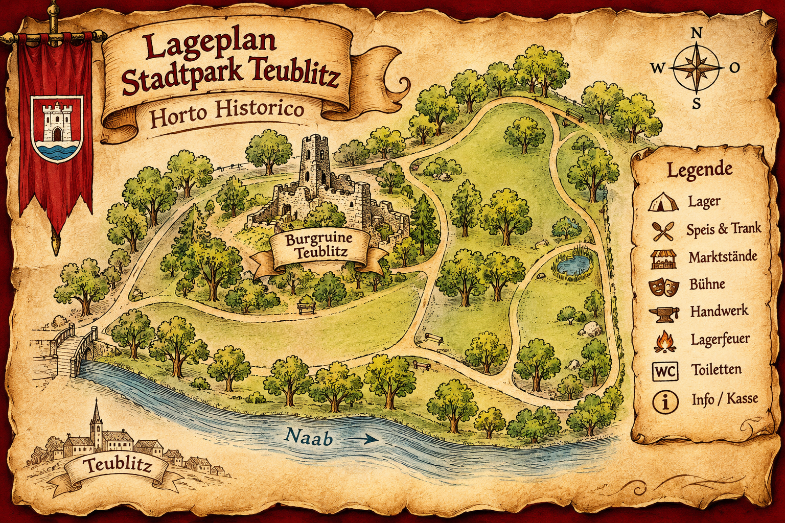

Aktuelle Hinweise
Hier findet ihr das Programmarchiv 2026. Neue Termine und aktuelle Besucherinformationen werden nach Bestätigung ergänzt.
Mittelalterfest Teublitz
✦ Mittelalterfest Teublitz ✦
Hier findet ihr das Programmarchiv 2026. Neue Termine und aktuelle Besucherinformationen werden nach Bestätigung ergänzt.

Musik und Marktleben im Stadtpark von Teublitz.
Programmarchiv · 21.–23. August 2026
Übernommene Angaben der bisherigen Website. Keine Ankündigung eines neuen Termins.

Zum Vergrößern die Karte antippen. Illustrative Darstellung, kein verifizierter Orientierungsplan.
Die bestätigten Marktstände, Speisen und Getränke werden hier ergänzt. Im vorhandenen Programmarchiv sind keine einzelnen Anbieter oder Speisekarten genannt.
Gaukeley und Zauberey, Kinderbasteln, Kinderschminken, Zinngießen, Kamelreiten, Alpakaführen, Wikingerschach und Sackschlagen.
Musik mit Grex Confusus, Terzium Laszivus, Spielleut I und Sie, Bernd v. Ammenberg, Michl mit dem Dudelsack, Terry der Barde und Spielleut Hermagor.
Die einzelnen Auftritte und Feuershows findet ihr mit ihren Zeiten im Festprogramm.
Zum Festprogramm →Weitere Fotos und Videos folgen.
Ort: Stadtpark Teublitz · Burgruine.
Eintritt laut bisheriger Website für 2026: Erwachsene 6 €, Gewandete 4 €, Kinder bis 15 Jahre 4 €, Kinder bis Schwertmaß frei. Drei-Tages-Ticket: Erwachsene 14 €, Kinder 8 €.
Historische Angaben; keine Zusage für zukünftige Veranstaltungen.